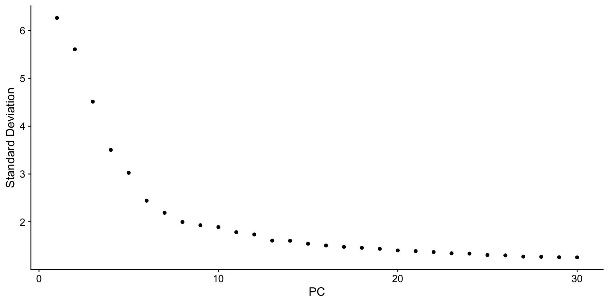
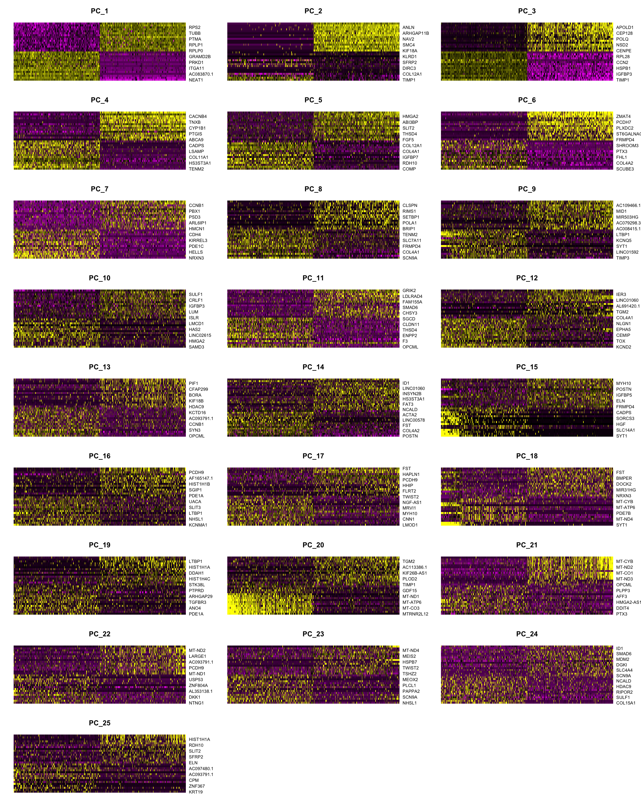
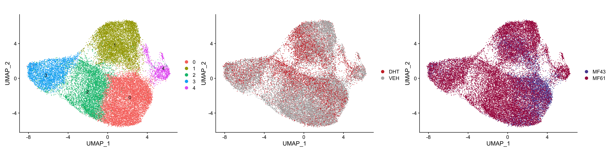
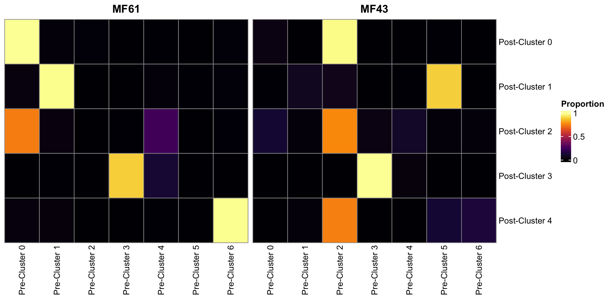
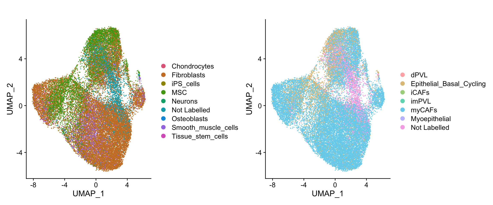
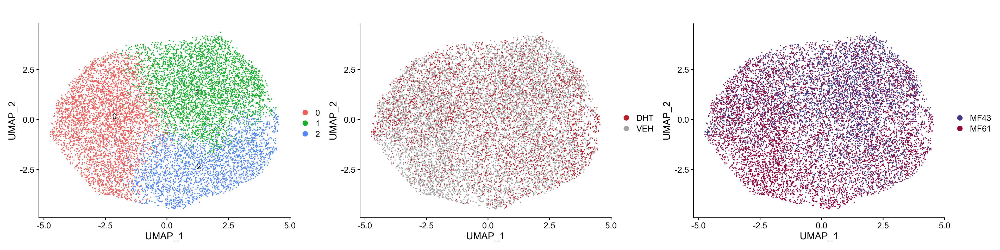
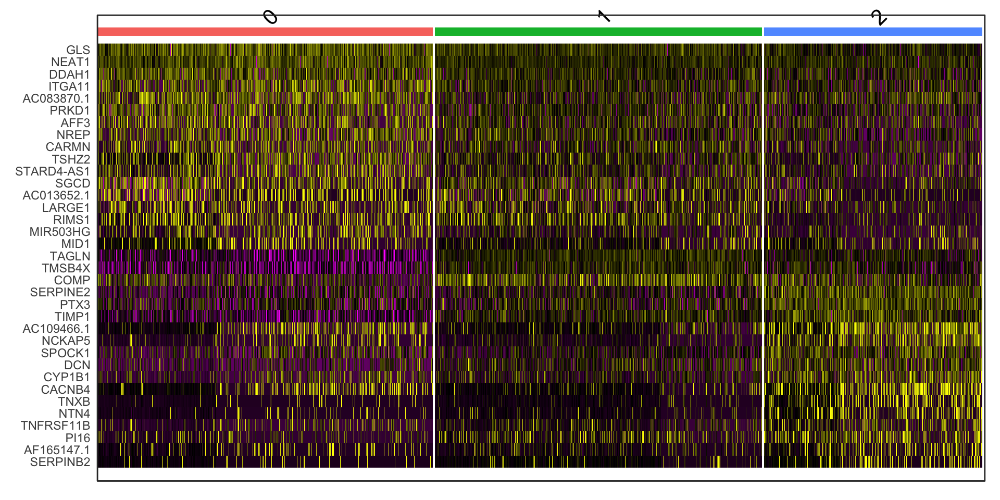

Last updated: 2023-06-29
Checks: 6 1
Knit directory:
DHT_fibroblast_snRNAseq/analysis/
This reproducible R Markdown analysis was created with workflowr (version 1.7.0). The Checks tab describes the reproducibility checks that were applied when the results were created. The Past versions tab lists the development history.
The R Markdown is untracked by Git. To know which version of the R
Markdown file created these results, you’ll want to first commit it to
the Git repo. If you’re still working on the analysis, you can ignore
this warning. When you’re finished, you can run
wflow_publish to commit the R Markdown file and build the
HTML.
Great job! The global environment was empty. Objects defined in the global environment can affect the analysis in your R Markdown file in unknown ways. For reproduciblity it’s best to always run the code in an empty environment.
The command set.seed(12345) was run prior to running the
code in the R Markdown file. Setting a seed ensures that any results
that rely on randomness, e.g. subsampling or permutations, are
reproducible.
Great job! Recording the operating system, R version, and package versions is critical for reproducibility.
Nice! There were no cached chunks for this analysis, so you can be confident that you successfully produced the results during this run.
Great job! Using relative paths to the files within your workflowr project makes it easier to run your code on other machines.
Great! You are using Git for version control. Tracking code development and connecting the code version to the results is critical for reproducibility.
The results in this page were generated with repository version 766d02d. See the Past versions tab to see a history of the changes made to the R Markdown and HTML files.
Note that you need to be careful to ensure that all relevant files for
the analysis have been committed to Git prior to generating the results
(you can use wflow_publish or
wflow_git_commit). workflowr only checks the R Markdown
file, but you know if there are other scripts or data files that it
depends on. Below is the status of the Git repository when the results
were generated:
Ignored files:
Ignored: .Rhistory
Ignored: .Rproj.user/
Ignored: analysis/.ipynb_checkpoints/
Ignored: output/fibroblast_combined.rds
Ignored: output/fibroblast_seurat.rds
Untracked files:
Untracked: analysis/.DS_Store
Untracked: analysis/Data_integration.Rmd
Untracked: analysis/Trajectory_analysis/
Untracked: data/Wu_2020/
Untracked: data/mf43/
Untracked: data/mf61/
Untracked: data/sca.rds
Untracked: output/cluster_marker_unintegrated.csv
Untracked: output/counts.mtx
Untracked: output/gene_names.csv
Untracked: output/metadata.csv
Untracked: output/pca.csv
Untracked: output/pred_hpca_combined.rds
Untracked: output/pred_wu_combined.rds
Unstaged changes:
Modified: .DS_Store
Deleted: .Rprofile
Deleted: .gitattributes
Modified: .gitignore
Deleted: README.md
Deleted: _workflowr.yml
Modified: analysis/Differential_Expression.Rmd
Modified: analysis/Preprocess_fibro_from10x.Rmd
Modified: analysis/Subtype_Prediction.Rmd
Modified: analysis/_site.yml
Note that any generated files, e.g. HTML, png, CSS, etc., are not included in this status report because it is ok for generated content to have uncommitted changes.
There are no past versions. Publish this analysis with
wflow_publish() to start tracking its development.
library(tidyverse)
library(yaml)
library(scales)
library(pander)
library(glue)
library(edgeR)
library(AnnotationHub)
library(ensembldb)
library(cowplot)
library(ggfortify)
library(magrittr)
library(cqn)
library(ggrepel)
library(DT)
library(Seurat)
library(corrplot)
library(plotly)
library(patchwork)
library(colorspace)
library(ggpubr)
library(randomcoloR)
library(ggforce)
library(MAST)
library(pheatmap)
library(BiocParallel)
library(SingleR)
library(celldex)panderOptions("table.split.table", Inf)
panderOptions("big.mark", ",")
theme_set(theme_bw())formatP <- function(p, m = 0.0001){
out <- rep("", length(p))
out[p < m] <- sprintf("%.2e", p[p<m])
out[p >= m] <- sprintf("%.4f", p[p>=m])
out
}ah <- AnnotationHub() %>%
subset(rdataclass == "EnsDb") %>%
subset(str_detect(description, "101")) %>%
subset(genome == "GRCh38")
stopifnot(length(ah) == 1)ensDb <- ah[[1]]
genesGR <- genes(ensDb)
transGR <- transcripts(ensDb)mcols(transGR) <- mcols(transGR) %>%
cbind(
transcriptLengths(ensDb)[rownames(.), c("nexon", "tx_len")]
)mcols(genesGR) <- mcols(genesGR) %>%
as.data.frame() %>%
dplyr::select(
gene_id, gene_name, gene_biotype, entrezid
) %>%
left_join(
mcols(transGR) %>%
as.data.frame() %>%
mutate(
tx_support_level = case_when(
is.na(tx_support_level) ~ 1L,
TRUE ~ tx_support_level
)
) %>%
group_by(gene_id) %>%
summarise(
n_tx = n(),
longest_tx = max(tx_len),
ave_tx_len = mean(tx_len),
gc_content = sum(tx_len*gc_content) / sum(tx_len)
) %>%
mutate(
bin_length = cut(
x = ave_tx_len,
labels = seq_len(10),
breaks = quantile(ave_tx_len, probs = seq(0, 1, length.out = 11)),
include.lowest = TRUE
),
bin_gc = cut(
x = gc_content,
labels = seq_len(10),
breaks = quantile(gc_content, probs = seq(0, 1, length.out = 11)),
include.lowest = TRUE
),
bin = paste(bin_gc, bin_length, sep = "_")
),
by = "gene_id"
) %>%
set_rownames(.$gene_id) %>%
as("DataFrame")# Color palettes used by most scRNA-seq methods could be found [here](https://rdrr.io/bioc/scater/src/R/plot_colours.R).
patient_col <- c(
"MF61" = "#A71B4B",
"MF43" = "#584B9F"
)
# scanpy colors were found in https://github.com/scverse/scanpy/blob/034ca2823804645e0d4874c9b16ba2eb8c13ac0f/scanpy/plotting/palettes.py
treat_col <- c(
VEH = rgb(0.7, 0.7, 0.7),
DHT = rgb(0.8, 0.2, 0.2))
sample_col <- hcl.colors(n = 4) %>%
set_names(c("mf43DHT", "mf43VEH", "mf61DHT", "mf61VEH"))Outputs of the 10X cellranger pipelines were stored in
different directories for cells derived from each of the four samples.
Those raw reads were read in using the Read10X() function
and made into individualSeurat object with the
min.cells parameter set to 3 and min.features
parameter set to 200 so only features detected in at least 3 cells and
cells with at least 200 features within each sample were kept.
The 4 individual Seurat object were then combined to one
using the merge() function. The merge step simply
concatenates the counts and cell metadata together. Unique gens will
also be added to the merged objects.
mf43DHT_rep1 <- Read10X(data.dir = "~/pilot_fibroblast_scRNAseq/data/mf43/MF43_1/MF43_DHT-1/")
mf43VEH_rep1 <- Read10X(data.dir = "~/pilot_fibroblast_scRNAseq/data/mf43/MF43_1/MF43_VEH-1/")
mf61DHT <- Read10X(data.dir = "~/pilot_fibroblast_scRNAseq/data/mf61/MF61D1-G/")
mf61VEH <- Read10X(data.dir = "~/pilot_fibroblast_scRNAseq/data/mf61/MF61V1-G/")mf43DHT <- CreateSeuratObject(counts = mf43DHT_rep1, project = "mf43DHT", min.cells = 3, min.features = 200)
mf43VEH <- CreateSeuratObject(counts = mf43VEH_rep1, project = "mf43VEH", min.cells = 3, min.features = 200)
mf61DHT <- CreateSeuratObject(counts = mf61DHT, project = "mf61DHT", min.cells = 3, min.features = 200)
mf61VEH <- CreateSeuratObject(counts = mf61VEH, project = "mf61VEH", min.cells = 3, min.features = 200)
fibroblast <- merge(mf43DHT, y = c(mf43VEH, mf61DHT, mf61VEH), project = "pilot_fibroblast")
fibroblast$Sample <- fibroblast[[]]$orig.ident
fibroblast$patient <- ifelse(str_detect(fibroblast[[]]$orig.ident, "mf43"), "MF43", "MF61")
fibroblast$Treatment <- ifelse(str_detect(fibroblast[[]]$orig.ident, "DHT"), "DHT", "VEH")The merged Seurat object was then split to two sub
objects by patients. Data normalisation and top 2000 most variable
features’ selections were conducted within each Seurat
object independently. Additionally, features that are repeatedly
variable across datasets for integration were selected using the
SelectIntegrationFeatures() function.
seurat_ls <- SplitObject(fibroblast, split.by = "patient")
seurat_ls <- lapply(seurat_ls, function(x){
x <- NormalizeData(x)
x <- FindVariableFeatures(x, selection.method = "vst", nfeatures = 2000)
})
features <- SelectIntegrationFeatures(object.list = seurat_ls)
anchors <- FindIntegrationAnchors(object.list = seurat_ls, anchor.features = features)
fibroblast_combined <- IntegrateData(anchorset = anchors)
DefaultAssay(fibroblast_combined) <- "integrated"
#saveRDS(fibroblast_combined, here::here("output/fibroblast_combined.rds"))fibroblast_combined <- readRDS(here::here("output/fibroblast_combined.rds"))The integrated dataset was also scaled. PCA heatmaps and elbowplot were again used the determine the dimensionality of the dataset to be 18.
fibroblast_combined <- ScaleData(fibroblast_combined, verbose = FALSE)fibroblast_combined <- RunPCA(fibroblast_combined, features = VariableFeatures(object = fibroblast_combined))
ElbowPlot(fibroblast_combined, ndims = 30)
DimHeatmap(fibroblast_combined, dims = 1:25, cells = 500, balanced = TRUE)
UMAP plots were generated to visualize the 5 clusters formed.
fibroblast_combined <- RunUMAP(fibroblast_combined, reduction = "pca", dims = 1:18)
fibroblast_combined <- RunTSNE(fibroblast_combined, tsne.method = "Rtsne", dims = 1:18)
fibroblast_combined <- FindNeighbors(fibroblast_combined, reduction = "pca", dims = 1:18)
fibroblast_combined <- FindClusters(fibroblast_combined, resolution = 0.3)Modularity Optimizer version 1.3.0 by Ludo Waltman and Nees Jan van Eck
Number of nodes: 29128
Number of edges: 872001
Running Louvain algorithm...
Maximum modularity in 10 random starts: 0.8823
Number of communities: 5
Elapsed time: 7 secondsfibroblast_combined$cluster <- Idents(fibroblast_combined)# saveRDS(pred_hpca_combined, here::here("output/pred_hpca_combined.rds"))UMAP plots were generated to visualize the 5 clusters formed.
p1 <- DimPlot(fibroblast_combined, reduction = "umap", label = TRUE, repel = TRUE)
p2 <- DimPlot(fibroblast_combined, reduction = "umap", group.by = "Treatment") +
scale_color_manual(values = treat_col) +
ggtitle("")
p3 <- DimPlot(fibroblast_combined, reduction = "umap", group.by = "patient") +
scale_color_manual(values = patient_col) +
ggtitle("")
p1 + p2 + p3 Although due to the large difference in the numbers of useable cells derived from each patient, three of the five formed clusters were still patient-driven, cluster 0 now has a similar numbers of cells from both patient.
num_cell <- fibroblast_combined[[]] %>%
group_by(cluster, patient, Treatment) %>%
summarise(
n = n() )%>%
ungroup() %>%
group_by(cluster) %>%
mutate(total = sum(n))
num_cell %>%
group_by(patient, cluster) %>%
mutate(n_pat = sum(n)) %>%
ungroup() %>%
dplyr::select(cluster, patient, n_pat) %>%
unique() %>%
ggplot(
aes(cluster, n_pat, fill = patient)
) +
geom_bar(stat="identity", position=position_dodge()) +
geom_text(aes(label=n_pat), vjust=1.6, color="white",
position = position_dodge(0.9), size=3.5) +
theme_minimal() +
labs(x = "Cluster",
y = "Number of Cells") +
scale_fill_manual(values = patient_col,
name = "Patient") +
theme(
panel.grid = element_blank(),
legend.margin=margin(0,0,0,0),
legend.box.margin=margin(-10,10,-10,-10)
)Numbers of cells assigned to each cluster post data integration, grouped by patients.
# cluster_marker_raw <- read_csv(here::here("output/cluster_marker_unintegrated.csv"))
# old_marker <- cluster_marker_raw %>%
# split(f = .$cluster) %>%
# lapply(function(x){x[order(x$avg_log2FC, decreasing = TRUE),]}) %>%
# lapply(function(x){x[1,]}) %>%
# lapply(pull,gene) %>%
# unlist(recursive = FALSE)
# FeaturePlot(
# fibroblast_combined, features = old_marker)library(bluster)
fibroblast <- readRDS(here::here("output/fibroblast_seurat.rds"))
matched_cluster <- fibroblast[[]] %>%
rownames_to_column("cell") %>%
dplyr::select(cell, old = cluster, patient) %>%
left_join(
fibroblast_combined[[]] %>%
rownames_to_column("cell") %>%
dplyr::select(cell, new = cluster)
)
tab_61 <- nestedClusters(ref=paste("Pre-Cluster", matched_cluster$old[matched_cluster$patient == "MF61"]),
alt=paste("Post-Cluster", matched_cluster$new[matched_cluster$patient == "MF61"]))
hp61 <- ComplexHeatmap::pheatmap(tab_61$proportions,
cluster_row=FALSE,
cluster_col=FALSE,
color = viridis_pal(option = "B")(10),
main = "MF61",
heatmap_legend_param = list(title = "Proportion"))
tab_43 <- nestedClusters(ref=paste("Pre-Cluster", matched_cluster$old[matched_cluster$patient == "MF43"]),
alt=paste("Post-Cluster", matched_cluster$new[matched_cluster$patient == "MF43"]))
hp43 <- ComplexHeatmap::pheatmap(tab_43$proportions,
cluster_row=FALSE,
cluster_col=FALSE,
color = viridis_pal(option = "B")(10),
main = "MF43",
legend = FALSE)
ComplexHeatmap::draw(hp61 + hp43) 
In the paper by Morsing M, et al. 2016, lobular human breast fibroblasts were found to be CD105high/CD26low while interlobular fibroblasts are CD105low/CD26high.
In the un-integrated data, it was observed that ENG was highly expressed in most cells while DPP4’s expression was consistently low. The expressions of the 2 genes across all cells post-integration were plotted as a sanity check. Still the expression patterns for the two genes are pretty homogeneous across all clusters.
FeaturePlot(
fibroblast_combined, features = c("ENG", "DPP4")) Post-integration expression of lobular fibroblast marker gene ENG(CD105) and interlobular fibroblast marker gene DPP4 (CD26) among all cells
pred_hpca <- readRDS(here::here("output/pred_hpca.rds"))
fibroblast_combined$old_hpca <- pred_hpca %>%
as.data.frame() %>%
rownames_to_column("cell") %>%
.[match(rownames(fibroblast_combined[[]]), .$cell),] %>%
droplevels() %>%
pull(pruned.labels) %>%
replace_na("Not Labelled")
pred_wu <- readRDS(here::here("output/pred_wu.rds"))
fibroblast_combined$old_wu <- pred_wu %>%
as.data.frame() %>%
rownames_to_column("cell") %>%
.[match(rownames(fibroblast_combined[[]]), .$cell),] %>%
droplevels() %>%
pull(pruned.labels) %>%
replace_na("Not Labelled")p1 <- DimPlot(fibroblast_combined,
reduction = "umap",
group.by = "old_hpca",
pt.size = 0.1
) +
ggtitle("") +
scale_color_discrete_qualitative()
p2 <- DimPlot(fibroblast_combined,
reduction = "umap",
group.by = "old_wu",
pt.size = 0.1
) +
ggtitle("") +
scale_color_discrete_qualitative(palette = "Set 3")
p1 | p2
Cells assigned to cluster 0, which had similar numbers of cells from both patients, were re-culstered using the same parameters.
seurat_cluster0 <- subset(fibroblast_combined, subset = cluster == "0")seurat_cluster0 <- RunUMAP(seurat_cluster0, reduction = "pca", dims = 1:18)
seurat_cluster0 <- RunTSNE(seurat_cluster0, tsne.method = "Rtsne", dims = 1:18)
seurat_cluster0 <- FindNeighbors(seurat_cluster0, reduction = "pca", dims = 1:18)
seurat_cluster0<- FindClusters(seurat_cluster0, resolution = 0.3)Modularity Optimizer version 1.3.0 by Ludo Waltman and Nees Jan van Eck
Number of nodes: 10582
Number of edges: 315705
Running Louvain algorithm...
Maximum modularity in 10 random starts: 0.8044
Number of communities: 3
Elapsed time: 2 secondsseurat_cluster0$cluster <- Idents(seurat_cluster0)3 sub-clusters were identified and they all had similar representations from both patients and treatment groups.
p1 <- DimPlot(seurat_cluster0, reduction = "umap", label = TRUE, repel = TRUE)
p2 <- DimPlot(seurat_cluster0, reduction = "umap", group.by = "Treatment") +
scale_color_manual(values = treat_col) +
ggtitle("")
p3 <- DimPlot(seurat_cluster0, reduction = "umap", group.by = "patient") +
scale_color_manual(values = patient_col) +
ggtitle("")
p1 + p2 + p3
cluster_marker_cluster0<- FindAllMarkers(
seurat_cluster0, min.pct = 0.5, logfc.threshold = 0.7, only.pos = TRUE
)
cluster_marker_cluster0 %>%
split(f = .$cluster) %>%
vapply(nrow, integer(1)) %>%
pander()| 0 | 1 | 2 |
|---|---|---|
| 17 | 3 | 15 |
DoHeatmap(seurat_cluster0, features = cluster_marker_cluster0$gene) +
NoLegend()
# new_marker <- cluster_marker_cluster0 %>%
# split(f = .$cluster) %>%
# lapply(function(x){x[order(x$avg_log2FC, decreasing = TRUE),]}) %>%
# lapply(function(x){x[1,]}) %>%
# lapply(pull,gene) %>%
# unlist(recursive = FALSE)
# FeaturePlot(
# seurat_cluster0, features = new_marker)p1 <- DimPlot(fibroblast_combined, reduction = "umap",
label = TRUE, repel = TRUE,
pt.size = 0.2, label.size = 30)
p2 <- DimPlot(fibroblast_combined, reduction = "umap",
group.by = "Treatment",
pt.size = 0.2) +
scale_color_manual(values = treat_col) +
ggtitle("")
p3 <- DimPlot(fibroblast_combined, reduction = "umap",
group.by = "patient",
pt.size = 0.2) +
scale_color_manual(values = patient_col,
guide = "none") +
ggtitle("")
p4 <- num_cell %>%
group_by(patient, cluster) %>%
mutate(n_pat = sum(n)) %>%
ungroup() %>%
dplyr::select(cluster, patient, n_pat) %>%
unique() %>%
ggplot(
aes(cluster, n_pat, fill = patient)
) +
geom_bar(stat="identity", position=position_dodge()) +
geom_text(aes(label=n_pat), vjust=0
, color="black",
position = position_dodge(0.9), size=12) +
theme_minimal() +
labs(x = "Cluster",
y = "Number of Cells") +
scale_fill_manual(values = patient_col,
name = "Patient") +
theme(
panel.grid = element_blank(),
legend.margin=margin(0,0,0,0),
legend.box.margin=margin(-10,10,-10,-10)
)
chap5_fig7 <- ((p1 |p2 ) / (p3 | p4) ) +
plot_annotation(
tag_levels = "A"
) &
theme(
# axis.title = element_text(size = 20),
# legend.key.size = unit(1, 'cm'),
# legend.text = element_text(size = 16),
# legend.title = element_text(size = 18),
text = element_text(size = 50),
plot.tag = element_text(size = 55, face = "bold" )
)
# png(
# "/Users/wenjunliu/PhD_thesis/Images/Chapter_05/chap5_fig7.png",
# height = 2000,
# width = 2800)
# chap5_fig7
# dev.off()library(grid)
hp61 <- ComplexHeatmap::pheatmap(tab_61$proportions,
cluster_row=FALSE,
cluster_col=FALSE,
color = viridis_pal(option = "B")(10),
main = "MF61",
heatmap_legend_param = list(title = "Proportion",
title_gp = gpar(fontsize = 50), # Font size of the legend title
labels_gp = gpar(fontsize = 40), # Font size of the legend labels
grid_width = unit(2, "cm"),
legend_height = unit(10, "cm"),
at = c(0, 0.5, 1)),
fontsize = 40,
cellwidth = 100,
cellheight = 200,
row_names_side = "left")
hp43 <- ComplexHeatmap::pheatmap(tab_43$proportions,
cluster_row=FALSE,
cluster_col=FALSE,
color = viridis_pal(option = "B")(10),
main = "MF43",
legend = FALSE,
fontsize = 40,
cellwidth = 100,
cellheight = 200,
row_names_side = "left")
# pdf(
# "/Users/wenjunliu/PhD_thesis/Images/Chapter_05/chap5_sup4.pdf",
# height = 20,
# width = 32)
# ComplexHeatmap::draw(hp61 + hp43)
# dev.off()p1 <- DimPlot(seurat_cluster0, reduction = "umap",
label = TRUE, repel = TRUE, label.size = 13,
pt.size = 1)
p2 <- DimPlot(seurat_cluster0, reduction = "umap",
group.by = "Treatment",
pt.size = 1) +
scale_color_manual(values = treat_col) +
ggtitle("")
p3 <- DimPlot(seurat_cluster0, reduction = "umap",
group.by = "patient",
pt.size = 1) +
scale_color_manual(values = patient_col) +
ggtitle("")
chap5_sup5 <- (p1 | p2 | p3) +
plot_annotation(
tag_levels = "A"
) &
theme(
# axis.title = element_text(size = 20),
legend.key.size = unit(2, 'cm'),
# legend.text = element_text(size = 16),
# legend.title = element_text(size = 18),
text = element_text(size = 35),
plot.tag = element_text(size = 55, face = "bold" )
)
png(
"/Users/wenjunliu/PhD_thesis/Images/Chapter_05/chap5_sup5.png",
height = 600,
width = 1800)
chap5_sup5
dev.off()quartz_off_screen
2 chap5_sup6 <- DoHeatmap(seurat_cluster0, features = cluster_marker_cluster0$gene,
angle = 0,
hjust = 0.5,
size = 24,
group.bar.height = 0.05) +
guides(
color = "none",
fill = guide_legend(
"Scaled Log-Norm\nCount",
reverse = TRUE)
) +
theme(
text = element_text(size = 40),
legend.key.size = unit(3, "cm"),
panel.border = element_blank()
)
# png(
# "/Users/wenjunliu/PhD_thesis/Images/Chapter_05/chap5_sup6.png",
# height = 2400,
# width = 2800
# )
# chap5_sup6
# dev.off()
sessionInfo()R version 4.3.0 (2023-04-21)
Platform: x86_64-apple-darwin20 (64-bit)
Running under: macOS Ventura 13.3.1
Matrix products: default
BLAS: /Library/Frameworks/R.framework/Versions/4.3-x86_64/Resources/lib/libRblas.0.dylib
LAPACK: /Library/Frameworks/R.framework/Versions/4.3-x86_64/Resources/lib/libRlapack.dylib; LAPACK version 3.11.0
locale:
[1] en_US.UTF-8/en_US.UTF-8/en_US.UTF-8/C/en_US.UTF-8/en_US.UTF-8
time zone: Australia/Adelaide
tzcode source: internal
attached base packages:
[1] grid splines stats4 stats graphics grDevices utils
[8] datasets methods base
other attached packages:
[1] bluster_1.10.0 celldex_1.10.1
[3] SingleR_2.2.0 BiocParallel_1.34.2
[5] pheatmap_1.0.12 MAST_1.26.0
[7] SingleCellExperiment_1.22.0 SummarizedExperiment_1.30.2
[9] MatrixGenerics_1.12.2 matrixStats_1.0.0
[11] ggforce_0.4.1 randomcoloR_1.1.0.1
[13] ggpubr_0.6.0 colorspace_2.1-0
[15] patchwork_1.1.2 plotly_4.10.2
[17] corrplot_0.92 SeuratObject_4.1.3
[19] Seurat_4.3.0 DT_0.28
[21] ggrepel_0.9.3 cqn_1.46.0
[23] quantreg_5.95 SparseM_1.81
[25] preprocessCore_1.62.1 nor1mix_1.3-0
[27] mclust_6.0.0 magrittr_2.0.3
[29] ggfortify_0.4.16 cowplot_1.1.1
[31] ensembldb_2.24.0 AnnotationFilter_1.24.0
[33] GenomicFeatures_1.52.0 AnnotationDbi_1.62.1
[35] Biobase_2.60.0 GenomicRanges_1.52.0
[37] GenomeInfoDb_1.36.0 IRanges_2.34.0
[39] S4Vectors_0.38.1 AnnotationHub_3.8.0
[41] BiocFileCache_2.8.0 dbplyr_2.3.2
[43] BiocGenerics_0.46.0 edgeR_3.42.4
[45] limma_3.56.2 glue_1.6.2
[47] pander_0.6.5 scales_1.2.1
[49] yaml_2.3.7 lubridate_1.9.2
[51] forcats_1.0.0 stringr_1.5.0
[53] dplyr_1.1.2 purrr_1.0.1
[55] readr_2.1.4 tidyr_1.3.0
[57] tibble_3.2.1 ggplot2_3.4.2
[59] tidyverse_2.0.0
loaded via a namespace (and not attached):
[1] fs_1.6.2 ProtGenerics_1.32.0
[3] spatstat.sparse_3.0-1 bitops_1.0-7
[5] doParallel_1.0.17 httr_1.4.6
[7] RColorBrewer_1.1-3 tools_4.3.0
[9] sctransform_0.3.5 backports_1.4.1
[11] utf8_1.2.3 R6_2.5.1
[13] lazyeval_0.2.2 uwot_0.1.14
[15] GetoptLong_1.0.5 withr_2.5.0
[17] sp_1.6-1 prettyunits_1.1.1
[19] gridExtra_2.3 progressr_0.13.0
[21] cli_3.6.1 Cairo_1.6-0
[23] spatstat.explore_3.2-1 labeling_0.4.2
[25] sass_0.4.6 spatstat.data_3.0-1
[27] ggridges_0.5.4 pbapply_1.7-0
[29] Rsamtools_2.16.0 parallelly_1.36.0
[31] rstudioapi_0.14 RSQLite_2.3.1
[33] shape_1.4.6 generics_0.1.3
[35] BiocIO_1.10.0 ica_1.0-3
[37] spatstat.random_3.1-5 car_3.1-2
[39] Matrix_1.5-4.1 fansi_1.0.4
[41] abind_1.4-5 lifecycle_1.0.3
[43] carData_3.0-5 Rtsne_0.16
[45] blob_1.2.4 promises_1.2.0.1
[47] ExperimentHub_2.8.0 crayon_1.5.2
[49] miniUI_0.1.1.1 lattice_0.21-8
[51] beachmat_2.16.0 KEGGREST_1.40.0
[53] magick_2.7.4 ComplexHeatmap_2.16.0
[55] pillar_1.9.0 knitr_1.43
[57] rjson_0.2.21 future.apply_1.11.0
[59] codetools_0.2-19 leiden_0.4.3
[61] V8_4.3.0 data.table_1.14.8
[63] vctrs_0.6.2 png_0.1-8
[65] gtable_0.3.3 cachem_1.0.8
[67] xfun_0.39 S4Arrays_1.0.4
[69] mime_0.12 survival_3.5-5
[71] iterators_1.0.14 interactiveDisplayBase_1.38.0
[73] ellipsis_0.3.2 fitdistrplus_1.1-11
[75] ROCR_1.0-11 nlme_3.1-162
[77] bit64_4.0.5 progress_1.2.2
[79] filelock_1.0.2 RcppAnnoy_0.0.20
[81] rprojroot_2.0.3 bslib_0.5.0
[83] irlba_2.3.5.1 KernSmooth_2.23-21
[85] DBI_1.1.3 tidyselect_1.2.0
[87] bit_4.0.5 compiler_4.3.0
[89] curl_5.0.1 git2r_0.32.0
[91] BiocNeighbors_1.18.0 xml2_1.3.4
[93] DelayedArray_0.26.3 rtracklayer_1.60.0
[95] lmtest_0.9-40 rappdirs_0.3.3
[97] digest_0.6.31 goftest_1.2-3
[99] spatstat.utils_3.0-3 rmarkdown_2.22
[101] XVector_0.40.0 htmltools_0.5.5
[103] pkgconfig_2.0.3 sparseMatrixStats_1.12.0
[105] highr_0.10 fastmap_1.1.1
[107] GlobalOptions_0.1.2 rlang_1.1.1
[109] htmlwidgets_1.6.2 DelayedMatrixStats_1.22.1
[111] shiny_1.7.4 farver_2.1.1
[113] jquerylib_0.1.4 zoo_1.8-12
[115] jsonlite_1.8.5 BiocSingular_1.16.0
[117] RCurl_1.98-1.12 GenomeInfoDbData_1.2.10
[119] munsell_0.5.0 Rcpp_1.0.10
[121] reticulate_1.30 stringi_1.7.12
[123] zlibbioc_1.46.0 MASS_7.3-60
[125] plyr_1.8.8 parallel_4.3.0
[127] listenv_0.9.0 deldir_1.0-9
[129] Biostrings_2.68.1 tensor_1.5
[131] circlize_0.4.15 hms_1.1.3
[133] locfit_1.5-9.8 igraph_1.4.3
[135] spatstat.geom_3.2-1 ggsignif_0.6.4
[137] ScaledMatrix_1.8.1 reshape2_1.4.4
[139] biomaRt_2.56.1 BiocVersion_3.17.1
[141] XML_3.99-0.14 evaluate_0.21
[143] BiocManager_1.30.21 foreach_1.5.2
[145] tweenr_2.0.2 tzdb_0.4.0
[147] httpuv_1.6.11 MatrixModels_0.5-1
[149] RANN_2.6.1 polyclip_1.10-4
[151] clue_0.3-64 future_1.32.0
[153] scattermore_1.2 rsvd_1.0.5
[155] broom_1.0.5 xtable_1.8-4
[157] restfulr_0.0.15 rstatix_0.7.2
[159] later_1.3.1 viridisLite_0.4.2
[161] memoise_2.0.1 GenomicAlignments_1.36.0
[163] cluster_2.1.4 workflowr_1.7.0
[165] timechange_0.2.0 globals_0.16.2
[167] here_1.0.1